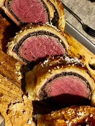

Beef Wellington

Go back to homepage
Ingredients
Easy to make in about 30 minutes. The best Beef Wellington in the world!
Ingredients
- Beef tenderloin
- Cloves
- Potatoes
- Onions
- Garlic
Steps
- Preheat the oven to 425°F (220°C).
- Cook the potatoes and onions in a large pot.
- In a small pan, heat the cloves and garlic.
- Season the beef tenderloin with salt and pepper.
- Wrap the beef in the potato mixture.
- Bake for 20-25 minutes, or until the internal temperature reaches 130°F (54°C).